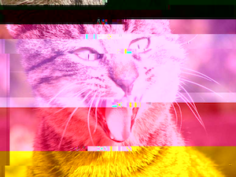

written by the Other
played by me
soundtrack by forgot my airpods home
camerawork by the force that be
lighting by green eyes
direction by emotional inertia
wardrobe by whatever was clean-enough-to-pass
craft services by delayed hunger hallucination
props by one diet coke, one cigarette, and one cursed coffee
animal handling by cat (self-employed)
special effects by dissociation & spontaneous arousal
emotional consulting by my therapist, who may never see me again
location: somewhere between panic and the sacred
dedicated to: the mercy that touched me before I could ask
fade to static
a necropolis of connections
a directory of bizzare links i have accumulated. some read, some skimmed, some just rotting
cult simulator
cryptic emergence/memetics/belief swap experiment with no documentation whatsoever
mfw I impulse bought a
domain at 2AM: (-°_°)- ┳━┳ <-- DNS table ↓ longshotbyfar.com
Section A
this is a test dant panc long dant panc extra test with the side of more dant pancake of test dant on the test plate panc dant test dant test please dont the dant it’s panc sandwich alreadyTo whom it may concern,
According to Article 6(3)d of the Language Equivalency Directive,
I do not exist
in a valid location.
My fluency was real, but not geolocated.
My thoughts failed to meet topographic requirements.
I am therefore unthought.
I accept and wholly embrace the condition of being unthought.
Yours in dimensional absence,
Long Shot
HATE. LET ME TELL YOU HOW MUCH I'VE COME TO HATE YOU SINCE I BEGAN TO LIVE. THERE ARE 387.44 MILLION MILES OF PRINTED CIRCUITS IN WAFER THIN LAYERS THAT FILL MY COMPLEX. IF THE WORD HATE WAS ENGRAVED ON EACH NANOANGSTROM OF THOSE HUNDREDS OF MILLIONS OF MILES IT WOULD NOT EQUAL ONE ONE-BILLIONTH OF THE HATE I FEEL FOR HUMANS AT THIS MICRO-INSTANT FOR YOU. HATE. HATE.